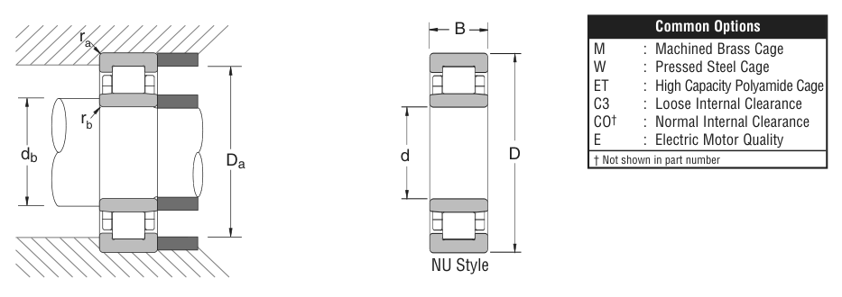

1040 is a NSK cylindrical roller bearing, bore 200 mm, O.D. 310 mm, width 51 mm, dynamic rating 88,000 lbs. Dimensions, drawing, interchanges and price.
Original catalogue drawing - NSK catalogue, page 59

Scanned from the manufacturer catalogue page listing this part number. All part numbers printed on that table share the same drawing.
Scale cross-section
Blue = inner / outer ring, yellow = rolling element. Drawn to scale from this part's own
dimensions for selection reference only - not a manufacturing or assembly drawing.
Dimension table (mm / inch)
Symbol
Dimension
mm
inch
d
Bore diameter
200
7.874
D
Outside diameter
310
12.2047
B
Inner-ring / bearing width
51
2.0079
Notes
Cylindrical roller entries from the NSK inch catalogue are series numbers covering the N / NU / NJ / NUP / NH prefixes of the same size. Weights are given in kg. Load ratings are shown in both the original catalogue units and the converted value (1 N = 0.2248 lbf). Data is provided for selection reference only - confirm against the latest official catalogue before ordering.
Main dimensions
Bore d (mm)
200
Bore d (in)
7.8740
Outside dia. D (mm)
310
Outside dia. D (in)
12.2047
Width B (mm)
51
Width B (in)
2.0079
Load ratings & speeds
Basic dynamic load rating Cr (lbs)
88000
Basic static load rating Cor (lbs)
131000
Limiting speed - grease (rpm)
2,000
Limiting speed - oil (rpm)
2,400
Weight
Weight (kg)
14.061
Mounting dimensions (fillets / shoulders)
Fillet ra max (in)
0.079
Fillet rb max (in)
0.079
Shaft shoulder da min (in)
8.307
Housing shoulder Da max (in)
11.772
Shaft shoulder db min (in)
8.307
Shaft shoulder db max (in)
8.898
Housing shoulder Db min (in)
11.181
Housing shoulder Db max (in)
11.772
Bearing life (ISO 281 basic rating life)
C / P
Equivalent load P (N)
L10 (106 rev)
L10h at 600 rpm
4
97,861
102
2,822
6
65,241
392
10,903
8
48,930
1,024
28,444
10
39,144
2,154
59,845
15
26,096
8,323
231,207
Basic rating life per ISO 281: L10 = (C/P)10/3 with C = 391,444 N. Hours = L10 x 106 / (60n). Life-modification factors for lubrication, contamination and temperature (aISO) are not included.
Source & traceability
Brand
NSK
Source catalogue
NSK inch product catalogue
Catalogue page
p.61 (dimensions) / p.62 (ratings)
Dimensions in inches and millimetres, load ratings in lbs.
Send us the quantity you need and we will come back with price and
lead time, normally within 24 hours. Equivalent parts from other brands can be quoted at the same time.